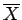
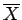

Inhalt Index DeskTop Bronstein

 Wahrscheinlichkeitsrechnung und Mathematische Statistik Mathematische Statistik Wichtige Prüfverfahren Vertrauensgrenzen für den Mittelwert
Wahrscheinlichkeitsrechnung und Mathematische Statistik Mathematische Statistik Wichtige Prüfverfahren Vertrauensgrenzen für den Mittelwert


Es sei X eine kontinuierliche Zufallsgröße, normalverteilt mit den Parametern  und
und  . Gemäß Abschnitt Verteilung der Stichprobenmittelwerte ist dann  ebenfalls eine kontinuierliche Zufallsgröße, normalverteilt mit den Parametern
. Gemäß Abschnitt Verteilung der Stichprobenmittelwerte ist dann  ebenfalls eine kontinuierliche Zufallsgröße, normalverteilt mit den Parametern  und . Durch die Substitution
und . Durch die Substitution
erhält man eine Zufallsgröße  , die der normierten Normalverteilung genügt. Für diese gilt
, die der normierten Normalverteilung genügt. Für diese gilt
Gibt man jetzt eine Irrtumswahrscheinlichkeit  vor und verlangt
vor und verlangt
| (16.139) |
dann kann man aus (16.139) numerisch bestimmen bzw. aus der Tabelle Normierte Normalverteilung ablesen und erhält aus unter Beachtung von (16.138) die Beziehung
Die Werte in (16.141) heißen Vertrauensgrenzen für den Mittelwert  der Grundgesamtheit bei bekannter Streuung
der Grundgesamtheit bei bekannter Streuung  und vorgegebener Irrtumswahrscheinlichkeit
und vorgegebener Irrtumswahrscheinlichkeit  . Man kann auch sagen: Der Mittelwert
. Man kann auch sagen: Der Mittelwert  liegt mit der statistischen Sicherheit zwischen den Vertrauensgrenzen (16.141).
liegt mit der statistischen Sicherheit zwischen den Vertrauensgrenzen (16.141).
Hinweis: Ist der Stichprobenumfang hinreichend groß , dann kann in (16.141) an Stelle der in der Regel unbekannten Streuung  der Grundgesamtheit die Stichprobenstreuung s2 verwendet werden. Anderenfalls müssen die Vertrauensgrenzen mit Hilfe der t-Verteilung gemäß (16.144) ermittelt werden.
der Grundgesamtheit die Stichprobenstreuung s2 verwendet werden. Anderenfalls müssen die Vertrauensgrenzen mit Hilfe der t-Verteilung gemäß (16.144) ermittelt werden.